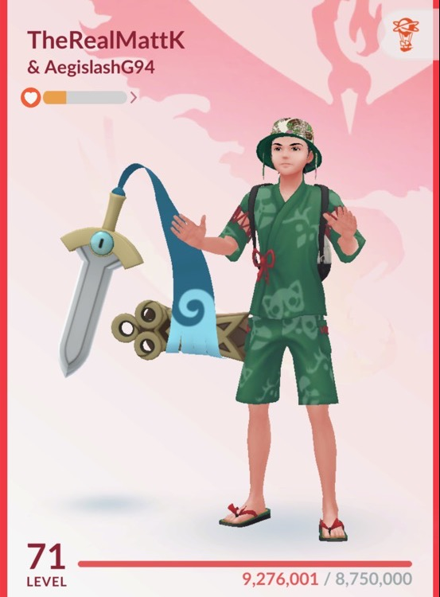
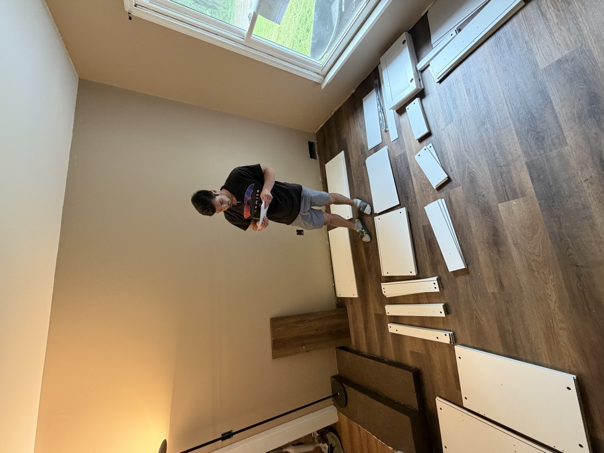
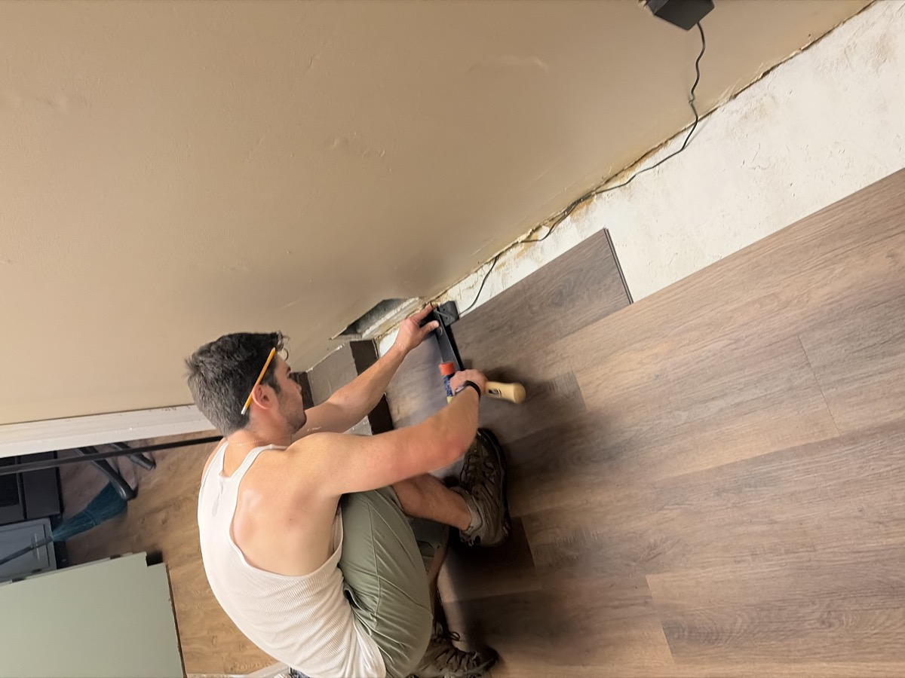
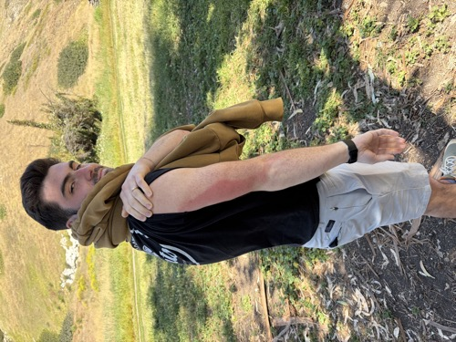
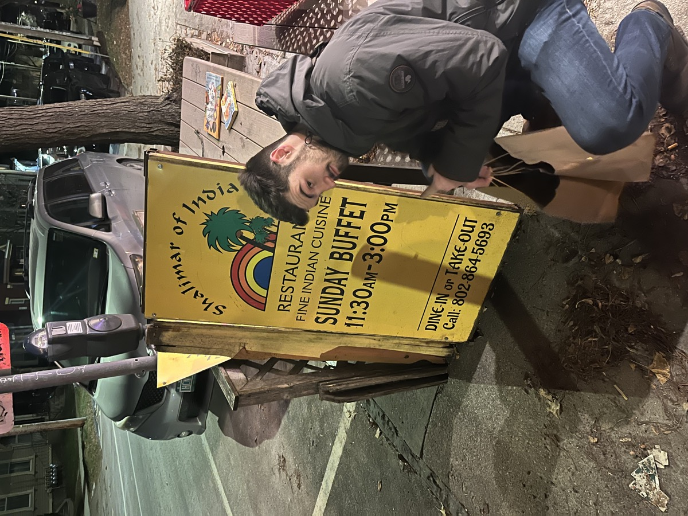
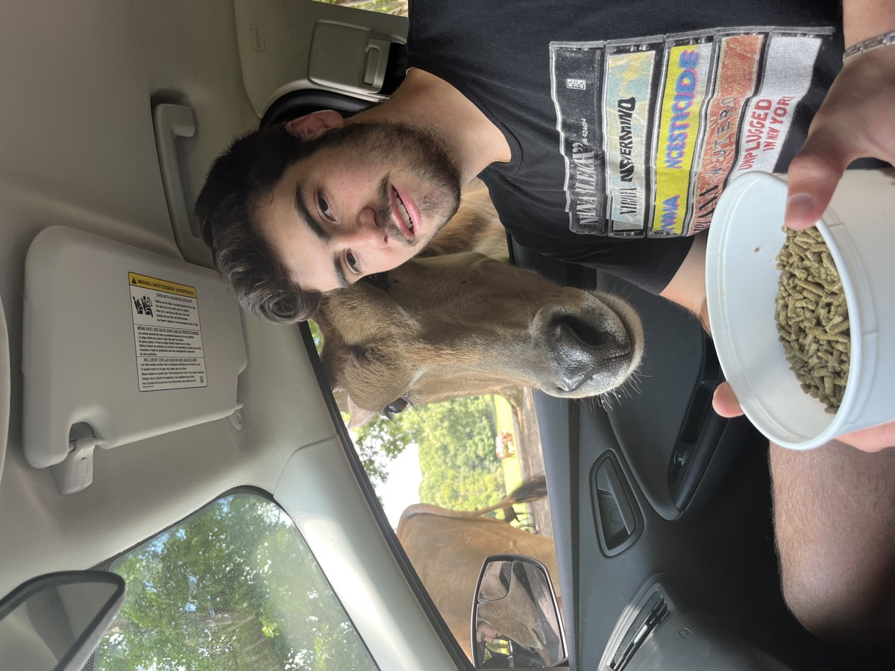

⭐ BREAKING: Matt Kahler spotted being a legend AGAIN ⭐ Scientists remain baffled ⭐ Local man voted "Most Matt" 14 years running ⭐ Sources confirm: he is, in fact, that guy ⭐
100% CERTIFIED LEGEND
MATT KAHLER
The Man. The Myth. The Diabetic.
📸 Rare Sightings
The Negotiation Face. Deals fear him.Matt discovers the front camera (colorized)D.A.R.E.'s least official spokespersonCleans up suspiciously wellPokemon Master Trainer

He, in fact, does catch 'em all

Ikea Matt

Bob the Builder MattPro Tent Pitcher

Diabetics can't use sunscreen

Buffet MattThicc Matt

deerBig sushi guyA Mexican kitchen fears himWorld TravelerMulti bar sport athlete
🧠 Verified Matt Facts
Matt Kahler doesn't Google things. Google Matts things.
He once returned a shopping cart WITHOUT anyone watching. True character.
He teaches stuff. Professionally. Somebody put him in charge of knowledge.
He spent all his money on FIFA. All of it. No regrets. Some regrets.
Will let you smoke cigs inside. A gentleman. A host. A fire hazard.
Mr. Lacey's favorite student. Mr. Lacey has never confirmed this.
He knows exactly how long to microwave anything. First try. Every time.
"Matt is married to a baddie" - Corey Ott
Cristiano Ronaldo's number one fan. Ronaldo has millions of fans. Matt is first. This is not a ranking Ronaldo agreed to.
Daily Times games master. Wordle, Globle, the Daily Mini. Undefeated and insufferable by 9am.
Matt is so sweet that prolonged exposure may cause diabetes. Consult your doctor before hanging out.